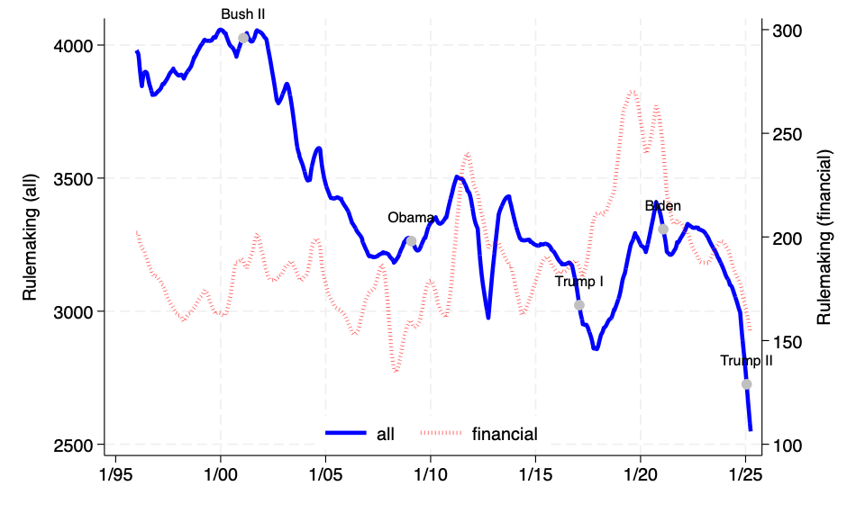

About me
I am an Assistant Professor of Finance at the Simon Business School, University of Rochester. Previously, I was a faculty member at Drexel University and a senior law clerk at the Supreme Court of Israel. I study the economics of regulation: how rules are written and enforced, how incentives and preferences shape regulatory decisions, and how regulation affects firms and markets. I use advanced empirical methods and novel data sets. My papers have been published in the Journal of Finance, Review of Financial Studies, Management Science, and Journal of Law and Economics.
Profiles: Google Scholar · SSRN · CV
Contact: jkalmeno@simon.rochester.eduResearch Interests
- Economics of Regulation
- Law and Economics
- Labor & Finance
- Corporate Governance
Education
- PhD in Finance, 2020
New York University, Stern School of Business - M.Phil. in Finance, 2019
New York University, Stern School of Business - B.A. in Economics & LL.B. (Law), 2012
The Hebrew University of Jerusalem
Regulation Tracker
The figure below measures the rising burden of federal paperwork requirements over time, based on two complementary indexes developed in Regulatory Intensity and Firm-Specific Exposure (RFS 2023). The blue line captures the cumulative number of regulatory mandates (“How many rules?”), while the red line reflects the total estimated compliance time in hours (“How many hours does it take to comply?”). Labels indicate presidential administrations. This is an updated version of the original figure, through October 31, 2025.

The figure below tracks the volume of regulations under development by federal agencies, based on the indexes developed in Follow the Pipeline (2023). The solid blue line reflects the total rulemaking activity across all agencies, while the dashed red line isolates financial regulations. Labels mark presidential administrations. This version updates the original dataset through March 31, 2025.
Datasets
The following datasets are available for scholarly, non-commercial research use only. Please feel free to reach out if you have questions, encounter any issues, or are interested in potential collaboration or extensions of the data. I am always happy to discuss ideas.
- Regulatory Fragmentation : firm-level data on regulatory fragmentation (intuitively: how many agencies supervise the same topic).
- Regulatory Similarity : firm-to-firm data on regulatory similarity (intuitively: how similar is the regulatory requirements of two firms).
- Regulatory Intensity and Firm-Specific Exposure : firm-level data on regulatory intensity (intuitively: how much does the firm pay to comply with federal regulations).
- Follow the Pipeline : firm-level data on regulatory pipeline (intuitively: how many rule proposals will become final rules).
- Incentivizing Financial Regulators : employee-level data on incentives & enforcement at the Securities and Exchange Commission.
- Regulatory Risk Perception and Small Business Lending : employee-level data on incentives & loan guarantees at the Small Business Administration.
Papers
Published and Forthcoming
-
Closing the Revolving Door, with Siddharth Vij & Kairong Xiao. Journal of Finance, forthcoming (2025).
Paper · Slides · Gupta Governance Institute · The Visible Hand · ProMarket · Best Paper Award (FMCG)
-
Regulatory Risk Perception and Small Business Lending, with Siddharth Vij. Management Science, forthcoming (2025).
Paper · Data · Slides · John W. Ryan Award
-
Regulatory Fragmentation, with Michelle Lowry & Kate Volkova. Journal of Finance 80(2), April 2025, Pages 1081-1126.
Paper · Data · Slides · FinReg Blog · Best Paper Award (FMARC) · Best Paper Award (Korean Securities Association)
- Regulatory Similarity, with Jason Chen. Journal of Law and Economics 67(3), August 2024, Pages 691-730.
-
Regulatory Intensity and Firm-Specific Exposure. Review of Financial Studies 36(8), August 2023, Pages 3311-3347.
Paper · Data · Slides · Harvard Law School
- Incentivizing Financial Regulators, with Siddharth Vij & Kairong Xiao. Review of Financial Studies 34(10), October 2021, Pages 4745–4784.
Working Papers
(I do not disclose R&R status)- Equal Job, Unequal Pay? Evidence from 4 Million Regulatory Careers, with Michelle Lowry & Billy Xu. ECGI Working Paper 1114.
- The Deep State and the Liberal Drift of Financial Regulators, with Denis Sosyura & Jason Chen.
- When Diversity Rules, with Abhinav Gupta, Ravi Ranjan, & Kairong Xiao.
- Contagious Deregulation, with Jakub Hajda & Billy Xu.
- Between Boardrooms and the Beltway: The Career Paths of Senior Regulators, with Ran Duchin & Jeffery Wang.
-
Escaping Pay-for-Performance, with Jason Chen & Jakub Hajda.
Paper · Slides · Best Paper Award (Wellington Finance Summit) · ECGI Blog · ProMarket
- Much Ado About Nothing? Overreaction to Random Regulatory Audits, with Sam Antill.
-
Follow the Pipeline, with Suzanne Chang, Jakub Hajda, & Alejandro Lopez-Lira.
Paper · Data · Slides · Best Paper Award (Sydney Banking Conference)
- Does Regulatory Exposure Create M&A Synergies?, with Eliezer Fich & Tom Griffin.
- The Environmental Consequences of Pay Inequality, with Jason Chen.
Insights & Commentary
Below you can find a selection of my non-academic writings, talks, and public-facing materials. These pieces are intended for broader audiences and reflect work presented in practitioner, policy, and educational settings.
- Introduction to Mergers & Acquisitions: lecture at Simon's Meliora Investment Club (November 2025)
- Understanding the Regulatory Landscape: lecture at Simon's China Advisory Council (August 2025)
- How DOGE is Dodging the Real Issue: interview for Simon's Dean's Blog (March 2025)
- Introduction to Regulatory Economics: lecture at Stanford University (May 2024)
- A Quick Guide for the Perplexed PhD Student: teaching notes for PhD candidates (May 2024)
- The Academic Journey: interview for the Simon Business Magazine (November 2023)
- Seven Insights on Regulation: lecture for Simon's Quick Takes Series (April 2023) (slides)